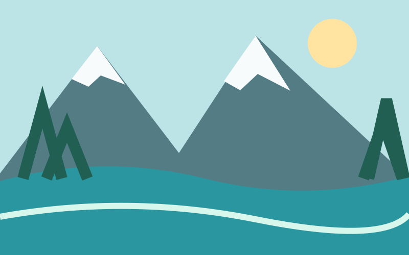

Alberta
Banff National Park
Explore the Canadian Rockies from Banff, with time for a lakeside walk and a mountain viewpoint.
Three places to experience Canada’s mountain lakes, waterfalls, and historic streets.

Alberta
Explore the Canadian Rockies from Banff, with time for a lakeside walk and a mountain viewpoint.
Ontario
Follow the riverfront promenade for different views of the falls, then pause where you can hear the water.

Québec
Spend an afternoon on foot exploring Old Québec’s narrow streets and historic buildings.
Find more trip ideas from Destination Canada.